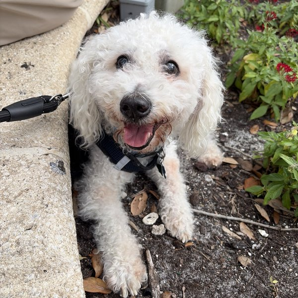

I run discovery, scope integrations, and translate messy requirements into things that actually ship, across engineering, finance, legal, and compliance buyers. Then I go home to FaceTime my crusty little white dog.
Customer-facing technical professional who runs discovery, scopes integrations, and translates complex requirements into execution. I've worked across engineering, finance, legal, and compliance buyers at a regulated bank and in zero-infrastructure startup environments. I build with LLMs every single day and I genuinely think that's the coolest thing in the world right now.
APIs, webhooks, event schemas, LLM pipelines: I don't just scope integrations, I prototype them. I write the code, run the query, and structure the output. Agentic tooling, Pydantic, CI/CD, usage-based event instrumentation. All of it.
I've scoped requirements with Legal, Risk, Compliance, and Finance at a regulated bank, and with early-stage founders figuring it out as they go. I know how to find the real requirement hiding behind the stated one, and translate it into something engineering can actually ship.

A usage-based personalization engine that ingests customer transaction events, applies weighted scoring across spend, frequency, and recency dimensions, and generates structured placement strategies via Claude. I designed the event schema and billable metric logic across 6 customer segments, modeled directly after how Metronome customers instrument usage-based pricing decisions. Includes A/B test hypotheses and expected conversion lift per segment.
AI-powered tool that audits any landing page and returns a prioritized experiment backlog. Built independently using agentic tooling and structured output design. Yes, it audited its own landing page. Very meta.
view on GitHub →Designed and shipped a Java/Cucumber/Selenium framework integrated with Jenkins CI/CD, eliminating manual regression execution across cross-functional engineering teams at Citi. Turns out I also just like building things that make people's lives less annoying.
read more →Integrated LLM-powered automation into daily regression testing workflows. Navigate Legal, Risk, Compliance, and Finance stakeholder reviews on every platform feature shipped. SQL root cause analysis on platform metric drops, weekly executive reporting. Architected Java/Cucumber/Selenium CI/CD framework that eliminated manual test execution entirely.
Led end-to-end implementation of an AI-driven compliance system in a high-stakes, ambiguous environment. Gathered requirements, configured the solution, monitored adoption, and resolved post-launch issues, cutting remediation times 17% across 2,000+ accounts. Scoped and authored Jira stories, acceptance criteria, and roadmap requirements for the A2C platform.
Led consumer research for the Citi Strata Elite card launch: designed interview guides, ran sessions with real customers, translated qual findings into quantified product hypotheses. Partnered with Booking.com on Citi Travel integrations, scoping technical requirements and managing cross-org dependencies from discovery through launch.
Advising a pre-seed founder on go-to-market structure, pricing strategy, and early operational workflows. Running customer discovery interviews to surface real buyer needs and shape product positioning. Analyzed unit economics and recommended pricing structure that preserved margin across pack configurations while staying competitive against retail incumbents.
Whether you're building usage-based billing infrastructure, need someone who can demo it and scope it, or just want to talk about where AI + fintech is going, please reach out. My crusty white dog and I are both very friendly. 🐶